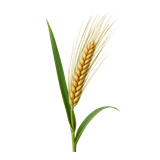

होम / जौ

जौ का भाव आज | Barley Mandi Price Today
जौ का भाव आज जानना किसानों और व्यापारियों के लिए ज़रूरी है। इस पेज पर नागौर, मेड़ता और श्रीगंगानगर जैसी उपलब्ध मंडियों में जौ के न्यूनतम, मॉडल और अधिकतम भाव प्रति क्विंटल में देखें। गुणवत्ता, आवक और नज़दीकी मंडियों की तुलना से बेहतर फैसला लिया जा सकता है।
Check available Barley mandi prices before you sell. Compare minimum, modal and maximum rates with quality, arrivals and nearby market records.
जौ का भाव कैसे देखें और रेट किन बातों से बदलता है
जौ का भाव दाने की गुणवत्ता, स्थानीय आवक और अलग-अलग खरीदारों की जरूरत पर बदल सकता है। इसे गेहूं के भाव का सीधा विकल्प नहीं मानना चाहिए।
आज का जौ भाव कैसे देखें
इस पेज की मंडी-वार तालिका में न्यूनतम, मॉडल और अधिकतम भाव देखें। अपनी नज़दीकी मंडी तथा उपलब्ध दूसरी मंडियों के भाव की तुलना करके फैसला लेना अधिक उपयोगी रहता है।
- अपनी मंडी या राज्य चुनकर भाव देखें।
- न्यूनतम, मॉडल और अधिकतम भाव में अंतर समझें।
- पुराने और नए उपलब्ध रिकॉर्ड में फर्क देखकर निर्णय लें।
गुणवत्ता और ग्रेड का असर
दाने का आकार, भराव, सफाई, नमी और टूटे दाने जौ के lot की बोली को प्रभावित कर सकते हैं। एकसार और सूखे माल की तुलना अलग तरह से होती है।
आवक, मांग और बाजार
खाद्य, पशु-आहार और प्रसंस्करण खरीदारों की मांग बदलने पर जौ के भाव में अंतर आ सकता है। कटाई के बाद आवक बढ़ना भी महत्वपूर्ण है।
जौ बेचने या खरीदने से पहले ध्यान रखें
- जौ को साफ और सूखा रखकर बेचें।
- गेहूं नहीं, जौ के उपलब्ध records से तुलना करें।
- मंडी की range और record की ताजगी दोनों देखें।